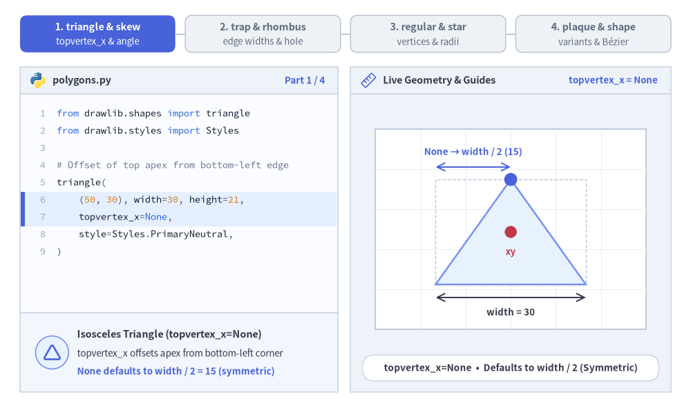

Polygons & Custom Paths
The Polygons & Custom Paths category of drawlib.shapes provides 9 geometric and path primitives: planar triangles and quadrilaterals (triangle, parallelogram, trapezoid, rhombus), radially symmetric shapes (regularpolygon, star), decorative corner-cut frames (plaque), arbitrary coordinate polygons (polygon), and a low-level Bézier vector path builder (shape).

Source Code
from drawlib.canvas import save, setup
from drawlib.shapes import (
parallelogram,
plaque,
polygon,
regularpolygon,
rhombus,
shape,
star,
trapezoid,
triangle,
)
from drawlib.styles import Styles
setup(width=128, height=58)
lbl_dark = Styles.DarkBold.patch(text_size=10.0)
lbl_white = Styles.WhiteBold.patch(text_size=10.0)
# Row 1: Planar Triangle, Parallelogram, Rhombus, Trapezoid, Plaque
triangle(
(15, 42),
width=19,
height=16,
style=Styles.Neutral,
text="triangle",
text_style=lbl_dark.patch(xy_shift=(0, -2.5)),
)
parallelogram(
(40, 42),
width=21,
height=15,
corner_angle=68,
style=Styles.PrimaryNeutral,
text="parallel",
text_style=lbl_dark,
)
rhombus(
(66, 42),
width=23,
height=17,
style=Styles.PrimaryFlat,
text="rhombus",
text_style=lbl_white,
)
trapezoid(
(91, 42),
height=15,
bottomedge_width=22,
topedge_width=13,
style=Styles.SecondaryNeutral,
text="trapezoid",
text_style=lbl_dark,
)
plaque(
(115, 42),
width=20,
height=15,
variant="concave",
style=Styles.Neutral,
text="plaque",
text_style=lbl_dark,
)
# Row 2: Regular Polygon, Star, Hollow Hexagon, Arbitrary Polygon, Custom Bézier Shape
regularpolygon(
(17, 15),
num_vertex=6,
radius=10.0,
style=Styles.SecondaryNeutral,
text="hex",
text_style=lbl_dark,
)
star(
(43, 15),
num_vertex=5,
radius_ext=11.0,
radius_int=5.2,
style=Styles.PrimaryFlat,
text="star",
text_style=lbl_white,
)
regularpolygon(
(68, 15),
num_vertex=6,
radius=10.0,
hole_ratio=0.55,
style=Styles.PrimaryNeutral.patch(shape_r=1.5),
text="ring",
text_style=Styles.DarkBold.patch(text_size=9.5),
)
polygon(
[(82, 8), (100, 8), (104, 15), (100, 22), (82, 22)],
style=Styles.Neutral.patch(shape_r=1.5),
text="polygon",
text_style=lbl_dark,
)
shape(
(116, 15),
path_points=[(0, 6), (0, 18), (10, 22), (20, 18), (20, 6), ((20, 1), (10, 0)), ((0, 1), (0, 6))],
style=Styles.SecondaryNeutral,
text="shape",
text_style=lbl_dark,
)
save()
1. Core Geometric Concepts
Almost all polygon primitives share Drawlib's Cartesian coordinate space and center-anchoring contract (xy, with polygon taking explicit canvas xys), while exposing concise geometric parameters that morph planar and radial contours without manual trigonometry. Watch how apex offsets (topvertex_x), shear angles (corner_angle), dual edge widths (topedge_width / bottomedge_width), concentric cutouts (hole_ratio), vertex counts (num_vertex), star radii (radius_ext / radius_int), plaque corner styles (variant), and Bézier control points (path_points) reshape each primitive:

Source Code
from __future__ import annotations
import math
from drawlib.anim import Animation
from drawlib.canvas import save, setup
from drawlib.icons import code as code_icons
from drawlib.icons import phosphor
from drawlib.lines import line
from drawlib.shapes import (
arc,
circle,
parallelogram,
plaque,
rectangle,
regularpolygon,
rhombus,
shape,
star,
trapezoid,
triangle,
)
from drawlib.smartarts import SourceCode, SourceCodeStyles
from drawlib.styles import Styles
from drawlib.text import text
W, H = 138.0, 82.0
setup(width=W, height=H)
anim = Animation(fps=10.0, loop=0)
CODE_TEXT_SIZE = 10.0
PT_TO_CANVAS = W / 720.0
FONT_CANVAS = CODE_TEXT_SIZE * PT_TO_CANVAS
LINE_H = FONT_CANVAS * 1.8
PAD_Y = FONT_CANVAS * 1.2
CODE_STYLES = SourceCodeStyles.get("default", font_lang="en", text_size=CODE_TEXT_SIZE).patch(
box_style=Styles.Neutral.patch(shape_fill_color=(0, 0, 0, 0), shape_line_width=0),
)
PANE_HEADER = Styles.Neutral.patch(
shape_fill_color=(238, 243, 250),
shape_line_color=(203, 213, 225),
shape_line_width=1.2,
shape_r=0.0,
)
EDITOR_BODY = Styles.Neutral.patch(
shape_fill_color=(250, 252, 255),
shape_line_color=(203, 213, 225),
shape_line_width=1.2,
shape_r=0.0,
)
TAKEAWAY_BODY = Styles.Neutral.patch(
shape_fill_color=(242, 246, 253),
shape_line_color=(203, 213, 225),
shape_line_width=1.2,
shape_r=0.0,
)
STUDIO_BODY = Styles.Neutral.patch(
shape_fill_color=(239, 243, 249),
shape_line_color=(203, 213, 225),
shape_line_width=1.2,
shape_r=0.0,
)
PART_ITEMS = [
("1. triangle & skew", "topvertex_x & angle"),
("2. trap & rhombus", "edge widths & hole"),
("3. regular & star", "vertices & radii"),
("4. plaque & shape", "variants & Bézier"),
]
def draw_step_bar(active_part: int) -> None:
"""Draw top 4-part progress bar (active_part is 1..4)."""
pill_w = 31.0
pill_h = 7.4
gap = 2.0
start_x = 4.0 + pill_w / 2.0
cy = 75.2
for idx, (label, sublabel) in enumerate(PART_ITEMS, start=1):
cx = start_x + (idx - 1) * (pill_w + gap)
if idx > 1:
prev_cx = cx - (pill_w + gap)
line(
(prev_cx + pill_w / 2.0 + 0.2, cy),
(cx - pill_w / 2.0 - 0.2, cy),
style=Styles.PrimaryBold if idx <= active_part else Styles.MutedThin,
)
if idx == active_part:
st = Styles.PrimaryFlat.patch(shape_r=1.4)
tst = Styles.WhiteBold.patch(text_size=10.3)
sub_tst = Styles.White.patch(text_size=9.5)
elif idx < active_part:
st = Styles.PrimaryNeutral.patch(shape_r=1.4, shape_line_width=1.1)
tst = Styles.PrimaryBold.patch(text_size=10.3)
sub_tst = Styles.Primary.patch(text_size=9.5)
else:
st = Styles.Neutral.patch(shape_r=1.4, shape_line_width=1.1)
tst = Styles.MutedBold.patch(text_size=10.3)
sub_tst = Styles.Muted.patch(text_size=9.5)
rectangle((cx, cy), width=pill_w, height=pill_h, style=st)
text((cx, cy + 1.35), label, style=tst)
text((cx, cy - 1.55), sublabel, style=sub_tst)
def draw_left_pane(
active_part: int,
code_lines: list[str],
hl_range: tuple[int, int],
icon_fn: object,
summary_title: str,
summary_line1: str,
summary_line2: str,
) -> None:
"""Draw left Python code editor + bottom geometric concept note."""
x0, w = 4.0, 63.5
cx = x0 + w / 2.0
top_y = 63.2
header_h = 5.4
editor_h = 43.8
takeaway_h = 15.8
rectangle((cx, top_y + header_h / 2.0), width=w, height=header_h, style=PANE_HEADER)
code_icons.python((x0 + 3.6, top_y + header_h / 2.0), width=3.4, style=Styles.Neutral)
text(
(x0 + 6.5, top_y + header_h / 2.0),
"polygons.py",
style=Styles.DarkBold.patch(text_size=10.2, halign="left"),
)
text(
(x0 + w - 2.6, top_y + header_h / 2.0),
f"Part {active_part} / 4",
style=Styles.PrimaryBold.patch(text_size=9.8, halign="right"),
)
rectangle((cx, top_y - editor_h / 2.0), width=w, height=editor_h, style=EDITOR_BODY)
hl_start, hl_end = hl_range
hl_top = top_y - PAD_Y - hl_start * LINE_H
hl_bot = top_y - PAD_Y - (hl_end + 1) * LINE_H
hl_cy = (hl_top + hl_bot) / 2.0
hl_h = hl_top - hl_bot
rectangle(
(cx, hl_cy),
width=w - 0.6,
height=hl_h,
style=Styles.Neutral.patch(shape_fill_color=(229, 239, 255), shape_line_width=0),
)
rectangle(
(x0 + 0.55, hl_cy),
width=0.9,
height=hl_h,
style=Styles.PrimaryFlat.patch(shape_line_width=0),
)
SourceCode.draw(
xy=(x0, top_y),
width=w,
code="\n".join(code_lines),
styles=CODE_STYLES,
code_lang="python",
show_linenum=True,
align="top_left",
)
take_cy = 3.6 + takeaway_h / 2.0
rectangle((cx, take_cy), width=w, height=takeaway_h, style=TAKEAWAY_BODY)
circle(
(x0 + 6.4, take_cy),
radius=3.3,
style=Styles.PrimaryNeutral.patch(shape_line_width=1.2),
)
icon_fn((x0 + 6.4, take_cy), width=3.8, style=Styles.PrimaryBold) # type: ignore[operator]
text(
(x0 + 11.4, take_cy + 3.6),
summary_title,
style=Styles.DarkBold.patch(text_size=10.4, halign="left"),
)
text(
(x0 + 11.4, take_cy - 0.2),
summary_line1,
style=Styles.Dark.patch(text_size=9.7, halign="left"),
)
text(
(x0 + 11.4, take_cy - 3.8),
summary_line2,
style=Styles.PrimaryBold.patch(text_size=9.6, halign="left"),
)
def draw_geometry_studio(param_badge: str, footer_caption: str) -> tuple[float, float]:
"""Draw right geometry lab shell, inner coordinate sheet with subtle grid, and footer."""
x0, w = 70.0, 64.0
cx = x0 + w / 2.0
top_y = 63.2
header_h = 5.4
body_h = 59.6
rectangle((cx, top_y + header_h / 2.0), width=w, height=header_h, style=PANE_HEADER)
phosphor.ruler((x0 + 3.6, top_y + header_h / 2.0), width=3.4, style=Styles.Primary)
text(
(x0 + 6.5, top_y + header_h / 2.0),
"Live Geometry & Guides",
style=Styles.DarkBold.patch(text_size=10.2, halign="left"),
)
text(
(x0 + w - 2.6, top_y + header_h / 2.0),
param_badge,
style=Styles.PrimaryBold.patch(text_size=9.6, halign="right"),
)
rectangle((cx, 3.6 + body_h / 2.0), width=w, height=body_h, style=STUDIO_BODY)
# Inner coordinate sheet (54 x 40) with subtle grid lines visible through holes
sheet_cx, sheet_cy = cx, 36.2
sheet_w, sheet_h = 54.0, 40.0
sx0, sy0 = sheet_cx - sheet_w / 2.0, sheet_cy - sheet_h / 2.0
rectangle(
(sheet_cx, sheet_cy),
width=sheet_w,
height=sheet_h,
style=Styles.Neutral.patch(
shape_fill_color=(255, 255, 255),
shape_line_color=(180, 194, 214),
shape_line_width=1.2,
),
)
g_st = Styles.MutedThin.patch(line_color=(232, 238, 246), line_width=0.8)
for gx in range(1, 6):
vx = sx0 + gx * (sheet_w / 6.0)
line((vx, sy0), (vx, sy0 + sheet_h), style=g_st)
for gy in range(1, 5):
vy = sy0 + gy * (sheet_h / 5.0)
line((sx0, vy), (sx0 + sheet_w, vy), style=g_st)
rectangle(
(cx, 8.4),
width=59.2,
height=5.2,
style=Styles.Neutral.patch(
shape_fill_color=(255, 255, 255),
shape_line_color=(203, 213, 225),
shape_line_width=1.1,
shape_r=2.4,
),
text=footer_caption,
text_style=Styles.DarkBold.patch(text_size=9.8),
)
return sheet_cx, sheet_cy
# =========================================================================
# Part 1: triangle (topvertex_x) & parallelogram (corner_angle)
# =========================================================================
TRI_STATES: list[tuple[str, float | None, float, str, str, str, str]] = [
(
"None",
None,
3.2,
"Isosceles Triangle (topvertex_x=None)",
"topvertex_x offsets apex from bottom-left corner",
"None defaults to width / 2 = 15 (symmetric)",
"topvertex_x=None • Defaults to width / 2 (Symmetric)",
),
(
"0",
0.0,
3.2,
"Right Triangle (topvertex_x=0)",
"topvertex_x=0 aligns apex over bottom-left edge",
"topvertex_x=width aligns over bottom-right edge",
"topvertex_x=0 • Left-Aligned 90° Right Triangle",
),
(
"24",
24.0,
3.2,
"Skewed Triangle (topvertex_x=24)",
"Any float shifts the top apex horizontally",
"Base width=30 stays centered around xy",
"topvertex_x=24 • Apex Shifted +24 from Left Edge",
),
]
for tx_expr, tx_num, dur, s_title, s_l1, s_l2, f_cap in TRI_STATES:
code_tri = [
"from drawlib.shapes import triangle",
"from drawlib.styles import Styles",
"",
"# Offset of top apex from bottom-left edge",
"triangle(",
" (50, 30), width=30, height=21,",
f" topvertex_x={tx_expr},",
" style=Styles.PrimaryNeutral,",
")",
]
with anim.frame(duration=dur):
draw_step_bar(1)
draw_left_pane(1, code_tri, (5, 6), phosphor.triangle, s_title, s_l1, s_l2)
scx, scy = draw_geometry_studio(f"topvertex_x = {tx_expr}", f_cap)
cy_t = scy - 0.6
x_bl, x_br = scx - 15.0, scx + 15.0
y_bot, y_top = cy_t - 10.5, cy_t + 10.5
tx_val = 15.0 if tx_num is None else tx_num
x_apex = x_bl + tx_val
rectangle(
(scx, cy_t),
width=30.0,
height=21.0,
style=Styles.MutedDashed.patch(
shape_fill_color=(0, 0, 0, 0),
shape_line_color=(185, 198, 218),
shape_line_width=1.0,
),
)
triangle(
(scx, cy_t),
width=30.0,
height=21.0,
topvertex_x=tx_num,
style=Styles.PrimaryNeutral.patch(shape_line_width=1.8),
)
circle((scx, cy_t), radius=1.2, style=Styles.DangerFlat)
text((scx, cy_t - 4.0), "xy", style=Styles.DangerBold.patch(text_size=9.5))
if tx_num == 0.0:
sq = 2.8
line((x_bl + sq, y_bot), (x_bl + sq, y_bot + sq), style=Styles.DangerBold.patch(line_width=1.4))
line((x_bl, y_bot + sq), (x_bl + sq, y_bot + sq), style=Styles.DangerBold.patch(line_width=1.4))
text((x_bl + 6.2, y_bot + 2.5), "90°", style=Styles.DangerBold.patch(text_size=9.5))
circle((x_apex, y_top), radius=1.3, style=Styles.DangerFlat)
text(
(x_apex + 1.8, y_top + 4.2),
"topvertex_x = 0 (left edge)",
style=Styles.PrimaryBold.patch(text_size=9.6, halign="left"),
)
else:
circle((x_apex, y_top), radius=1.3, style=Styles.PrimaryFlat)
line(
(x_bl, y_top + 2.5),
(x_apex, y_top + 2.5),
arrow_head="<->",
style=Styles.PrimaryBold.patch(line_width=1.4),
)
top_lbl = "None → width / 2 (15)" if tx_num is None else "topvertex_x = 24"
text(
((x_bl + x_apex) / 2.0, y_top + 5.5),
top_lbl,
style=Styles.PrimaryBold.patch(text_size=9.6),
)
line(
(x_bl, y_bot - 2.6),
(x_br, y_bot - 2.6),
arrow_head="<->",
style=Styles.DarkBold.patch(line_width=1.4),
)
text((scx, y_bot - 5.5), "width = 30", style=Styles.DarkBold.patch(text_size=9.6))
for c_ang, dur in ((82, 0.50), (62, 3.2)):
code_para = [
"from drawlib.shapes import parallelogram",
"from drawlib.styles import Styles",
"",
"# Interior slant angle (0 < angle < 90)",
"parallelogram(",
" (50, 30), width=32, height=19,",
f" corner_angle={c_ang},",
" style=Styles.SecondaryNeutral,",
")",
]
with anim.frame(duration=dur):
draw_step_bar(1)
draw_left_pane(
1,
code_para,
(5, 6),
phosphor.compass,
"Shear Angle (parallelogram)",
"corner_angle sets bottom-left slant (0°..90°)",
"Smaller angle increases horizontal top shear",
)
w_p, h_p = 32.0, 19.0
x_shift = h_p / math.tan(math.radians(c_ang))
total_w = w_p + x_shift
scx, scy = draw_geometry_studio(
f"corner_angle = {c_ang}°",
f"corner_angle={c_ang}° • Base width=32, Shear={x_shift:.1f}",
)
cy_p = scy - 0.5
p1_x, p1_y = scx - total_w / 2.0, cy_p - h_p / 2.0
p2_x, p2_y = p1_x + x_shift, cy_p + h_p / 2.0
p4_x = p1_x + w_p
line((p1_x, p1_y), (p1_x, p2_y + 2.0), style=Styles.MutedDashed.patch(line_width=1.1))
parallelogram(
(scx, cy_p),
width=w_p,
height=h_p,
corner_angle=c_ang,
style=Styles.SecondaryNeutral.patch(shape_line_width=1.8),
)
arc(
(p1_x, p1_y),
width=11.0,
height=11.0,
angle_start=0,
angle_end=c_ang,
style=Styles.PrimaryNeutral.patch(shape_line_width=2.0),
)
text(
(p1_x + 7.2, p1_y + 3.2),
f"{c_ang}°",
style=Styles.PrimaryBold.patch(text_size=9.8, halign="left"),
)
if c_ang == 62:
line(
(p1_x, p2_y + 2.4),
(p2_x, p2_y + 2.4),
arrow_head="<->",
style=Styles.PrimaryBold.patch(line_width=1.4),
)
text(
((p1_x + p2_x) / 2.0 + 3.0, p2_y + 5.3),
f"shear = {x_shift:.1f}",
style=Styles.PrimaryBold.patch(text_size=9.5),
)
line(
(p1_x, p1_y - 2.6),
(p4_x, p1_y - 2.6),
arrow_head="<->",
style=Styles.DarkBold.patch(line_width=1.4),
)
text(((p1_x + p4_x) / 2.0, p1_y - 5.5), "width = 32", style=Styles.DarkBold.patch(text_size=9.6))
circle((scx, cy_p), radius=1.2, style=Styles.DangerFlat)
# =========================================================================
# Part 2: trapezoid (topedge_width) & rhombus (shape_r + hole_ratio)
# =========================================================================
for top_w, dur in ((28, 0.45), (18, 0.45), (11, 3.2)):
code_trap = [
"from drawlib.shapes import trapezoid",
"from drawlib.styles import Styles",
"",
"trapezoid(",
" (50, 30), height=19,",
" bottomedge_width=30,",
f" topedge_width={top_w},",
" style=Styles.PrimaryNeutral,",
")",
]
with anim.frame(duration=dur):
draw_step_bar(2)
draw_left_pane(
2,
code_trap,
(5, 6),
phosphor.bounding_box,
"Dual Edge Widths (trapezoid)",
"Independent topedge_width & bottomedge_width",
"topedge_x=None centers the top edge cleanly",
)
scx, scy = draw_geometry_studio(
f"topedge = {top_w}",
f"topedge_width={top_w} vs. bottomedge_width=30",
)
cy_tr = scy - 0.4
y_bot, y_top = cy_tr - 9.5, cy_tr + 9.5
line((scx - 15.0, y_bot), (scx - 15.0, y_top), style=Styles.MutedDashed.patch(line_width=1.0))
line((scx + 15.0, y_bot), (scx + 15.0, y_top), style=Styles.MutedDashed.patch(line_width=1.0))
trapezoid(
(scx, cy_tr),
height=19.0,
bottomedge_width=30.0,
topedge_width=float(top_w),
style=Styles.PrimaryNeutral.patch(shape_line_width=1.8),
)
line(
(scx - top_w / 2.0, y_top + 2.6),
(scx + top_w / 2.0, y_top + 2.6),
arrow_head="<->",
style=Styles.PrimaryBold.patch(line_width=1.5),
)
text(
(scx, y_top + 5.6),
f"topedge_width = {top_w}",
style=Styles.PrimaryBold.patch(text_size=9.8),
)
line(
(scx - 15.0, y_bot - 2.6),
(scx + 15.0, y_bot - 2.6),
arrow_head="<->",
style=Styles.DarkBold.patch(line_width=1.4),
)
text(
(scx, y_bot - 5.6),
"bottomedge_width = 30",
style=Styles.DarkBold.patch(text_size=9.6),
)
circle((scx, cy_tr), radius=1.2, style=Styles.DangerFlat)
for hr_expr, hr_val, dur in (("None", None, 0.50), ("0.52", 0.52, 3.2)):
code_rhom = [
"from drawlib.shapes import rhombus",
"from drawlib.styles import Styles",
"",
"rhombus(",
" (50, 30), width=32, height=21,",
f" hole_ratio={hr_expr},",
" style=Styles.PrimaryFlat.patch(",
" shape_r=2.2,",
" ),",
")",
]
with anim.frame(duration=dur):
draw_step_bar(2)
draw_left_pane(
2,
code_rhom,
(5, 7),
phosphor.diamond,
"Rounded Hollow Diamond (rhombus)",
"width & height set full tip-to-tip diagonals",
"hole_ratio=0.52 + shape_r=2.2 inset cleanly",
)
badge = "Solid Rhombus" if hr_val is None else "hole_ratio = 0.52"
f_rhom = (
"rhombus(shape_r=2.2, hole_ratio=None) • Solid Diamond"
if hr_val is None
else "rhombus(shape_r=2.2, hole_ratio=0.52) • True Cutout"
)
scx, scy = draw_geometry_studio(badge, f_rhom)
cy_rh = scy + 0.2
rhombus(
(scx, cy_rh),
width=32.0,
height=21.0,
hole_ratio=hr_val,
style=Styles.PrimaryFlat.patch(shape_r=2.2),
)
line(
(scx - 16.0, cy_rh - 13.0),
(scx + 16.0, cy_rh - 13.0),
arrow_head="<->",
style=Styles.DarkBold.patch(line_width=1.4),
)
text(
(scx, cy_rh - 15.8),
"width = 32 (diagonal)",
style=Styles.DarkBold.patch(text_size=9.5),
)
if hr_val is not None:
line(
(scx - 6.8, cy_rh),
(scx + 6.8, cy_rh),
arrow_head="<->",
style=Styles.DangerBold.patch(line_width=1.5),
)
text(
(scx, cy_rh + 13.5),
"hole_ratio = 0.52 • Grid Visible Inside",
style=Styles.PrimaryBold.patch(text_size=9.6),
)
# =========================================================================
# Part 3: regularpolygon (num_vertex) & star (radius_ext / radius_int)
# =========================================================================
POLY_NAMES = {3: "Triangle", 5: "Pentagon", 6: "Hexagon", 8: "Octagon"}
for nv, dur in ((3, 0.45), (5, 0.45), (6, 0.45), (8, 3.2)):
code_reg = [
"from drawlib.shapes import regularpolygon",
"from drawlib.styles import Styles",
"",
"# First vertex always starts at 90° (top)",
"regularpolygon(",
" (50, 30),",
f" num_vertex={nv}, radius=13.5,",
" style=Styles.PrimaryNeutral,",
")",
]
with anim.frame(duration=dur):
draw_step_bar(3)
draw_left_pane(
3,
code_reg,
(6, 6),
phosphor.hexagon,
"Circumscribed Polygon (regularpolygon)",
"Places num_vertex corners on circle of radius",
"Top vertex sits at 90° (rotate via style.angle)",
)
p_name = POLY_NAMES[nv]
scx, scy = draw_geometry_studio(
f"num_vertex = {nv}",
f"num_vertex={nv} ({p_name}) • Circumscribed r=13.5",
)
cy_rp = scy - 1.0
r_rp = 13.5
circle(
(scx, cy_rp),
radius=r_rp,
style=Styles.MutedDashed.patch(
shape_fill_color=(0, 0, 0, 0),
shape_line_color=(175, 192, 216),
shape_line_width=1.2,
),
)
regularpolygon(
(scx, cy_rp),
num_vertex=nv,
radius=r_rp,
style=Styles.PrimaryNeutral.patch(shape_line_width=1.8),
)
for i in range(nv):
ang_rad = math.pi / 2.0 + i * 2.0 * math.pi / nv
vx = scx + r_rp * math.cos(ang_rad)
vy = cy_rp + r_rp * math.sin(ang_rad)
circle(
(vx, vy),
radius=1.35 if i == 0 else 1.0,
style=Styles.DangerFlat if i == 0 else Styles.PrimaryFlat,
)
text((scx, cy_rp + r_rp + 3.4), "90° (top)", style=Styles.DangerBold.patch(text_size=9.6))
circle((scx, cy_rp), radius=1.1, style=Styles.DarkFlat)
rad_a = math.radians(45.0 if nv == 8 else 30.0)
line(
(scx, cy_rp),
(scx + r_rp * math.cos(rad_a), cy_rp + r_rp * math.sin(rad_a)),
arrow_head="->",
style=Styles.DarkBold.patch(line_width=1.4),
)
text(
(scx + 14.5, cy_rp + 8.0),
"r = 13.5",
style=Styles.DarkBold.patch(text_size=9.5, halign="left"),
)
for r_int, dur in ((8.0, 0.45), (5.4, 0.45), (3.6, 3.2)):
code_star = [
"from drawlib.shapes import star",
"from drawlib.styles import Styles",
"",
"# 2 * num_vertex alternating tip/valley pts",
"star(",
" (50, 30), num_vertex=5,",
" radius_ext=13.5,",
f" radius_int={r_int:.1f},",
" style=Styles.PrimaryFlat,",
")",
]
with anim.frame(duration=dur):
draw_step_bar(3)
draw_left_pane(
3,
code_star,
(6, 7),
phosphor.star,
"Outer Tips & Inner Valleys (star)",
"radius_ext sets outer tips; radius_int valleys",
"Smaller radius_int sharpens star points live",
)
scx, scy = draw_geometry_studio(
f"radius_int = {r_int:.1f}",
f"num_vertex=5, radius_ext=13.5, radius_int={r_int:.1f}",
)
cy_st = scy - 0.8
r_ext = 13.5
circle(
(scx, cy_st),
radius=r_ext,
style=Styles.PrimaryDashed.patch(shape_fill_color=(0, 0, 0, 0), shape_line_width=1.2),
)
star(
(scx, cy_st),
num_vertex=5,
radius_ext=r_ext,
radius_int=r_int,
style=Styles.PrimaryFlat,
)
circle(
(scx, cy_st),
radius=r_int,
style=Styles.DangerDashed.patch(shape_fill_color=(0, 0, 0, 0), shape_line_width=1.4),
)
circle((scx, cy_st), radius=1.1, style=Styles.White)
tip_rad = math.radians(18.0)
line(
(scx, cy_st),
(scx + r_ext * math.cos(tip_rad), cy_st + r_ext * math.sin(tip_rad)),
arrow_head="->",
style=Styles.DarkBold.patch(line_width=1.4),
)
text(
(scx + 14.0, cy_st + 7.2),
"r_ext=13.5",
style=Styles.PrimaryBold.patch(text_size=9.5, halign="left"),
)
val_rad = math.radians(-18.0)
line(
(scx, cy_st),
(scx + r_int * math.cos(val_rad), cy_st + r_int * math.sin(val_rad)),
arrow_head="->",
style=Styles.DangerBold.patch(line_width=1.5),
)
text(
(scx + 12.2, cy_st - 9.8),
f"r_int={r_int:.1f}",
style=Styles.DangerBold.patch(text_size=9.6, halign="left"),
)
# =========================================================================
# Part 4: plaque (variant) & shape (Bézier path_points)
# =========================================================================
PLAQUE_STATES = [
("concave", 3.2, "Quarter-Circle Arc Cut", 'variant="concave" • Inward Quarter-Circle Arcs'),
("chamfered", 0.45, "45° Diagonal Corner Cut", 'variant="chamfered" • 45° Diagonal Octagonal Cuts'),
("notched", 3.2, "90° L-Shaped Step Cut", 'variant="notched" • 90° Orthogonal Stepped Corners'),
]
for var_name, dur, corner_desc, f_cap in PLAQUE_STATES:
code_plaque = [
"from drawlib.shapes import plaque",
"from drawlib.styles import Styles",
"",
'# "concave" | "chamfered" | "notched"',
"plaque(",
" (50, 30), width=36, height=22,",
f' variant="{var_name}",',
" cut_ratio=0.25,",
" style=Styles.SecondaryNeutral,",
")",
]
with anim.frame(duration=dur):
draw_step_bar(4)
draw_left_pane(
4,
code_plaque,
(6, 7),
phosphor.certificate,
f'Plaque Corner Cut (variant="{var_name}")',
"Carves all 4 corners by cut_ratio * min(w, h)",
'"chamfered" (45°) & "notched" (90°) take shape_r',
)
scx, scy = draw_geometry_studio(f'"{var_name}"', f_cap)
cy_pl = scy - 0.4
rectangle(
(scx, cy_pl),
width=36.0,
height=22.0,
style=Styles.MutedDashed.patch(
shape_fill_color=(0, 0, 0, 0),
shape_line_color=(185, 198, 218),
shape_line_width=1.0,
),
)
plaque(
(scx, cy_pl),
width=36.0,
height=22.0,
variant=var_name, # type: ignore[arg-type]
cut_ratio=0.25,
style=Styles.SecondaryNeutral.patch(shape_line_width=1.8),
text=var_name.upper(),
text_style=Styles.DarkBold.patch(text_size=10.5),
)
text(
(scx, cy_pl + 14.3),
corner_desc,
style=Styles.PrimaryBold.patch(text_size=9.8),
)
text(
(scx, cy_pl - 14.2),
"cut_ratio = 0.25 • Dashed = Full 36 × 22 Box",
style=Styles.MutedBold.patch(text_size=9.5),
)
with anim.frame(duration=3.2):
code_shape = [
"from drawlib.shapes import shape",
"from drawlib.styles import Styles",
"",
"shape(",
" (50, 30), path_points=[",
" (0, 0), (0, 11),",
" ((9, 24), (25, 24), (34, 11)),",
" (34, 0),",
" ],",
" style=Styles.PrimaryNeutral,",
")",
]
draw_step_bar(4)
draw_left_pane(
4,
code_shape,
(5, 8),
phosphor.bezier_curve,
"Custom Vector & Bézier Path (shape)",
"(x, y) straight; ((cp1), (cp2), (end)) cubic",
"Auto-closes back to path_points[0] & centers xy",
)
scx, scy = draw_geometry_studio(
"Cubic Bézier",
"Straight (x, y) Edges + Cubic ((cp1), (cp2), (end))",
)
cy_sh = scy - 1.2
# Local bbox of anchor_points [(0,0), (0,11), (9,24), (34,0)] has center (17.0, 12.0)
ox, oy = scx - 17.0, cy_sh - 12.0
shape(
(scx, cy_sh),
path_points=[
(0, 0),
(0, 11),
((9, 24), (25, 24), (34, 11)),
(34, 0),
],
style=Styles.PrimaryNeutral.patch(shape_line_width=2.0),
text="Custom Path",
text_style=Styles.DarkBold.patch(text_size=10.2, xy_shift=(0, -3.2)),
)
# Control point tangent handle guides
p_s = (ox + 0.0, oy + 11.0)
p_cp1 = (ox + 9.0, oy + 24.0)
p_cp2 = (ox + 25.0, oy + 24.0)
p_e = (ox + 34.0, oy + 11.0)
line(p_s, p_cp1, style=Styles.DangerDashed.patch(line_width=1.4))
line(p_e, p_cp2, style=Styles.DangerDashed.patch(line_width=1.4))
line(p_cp1, p_cp2, style=Styles.MutedDashed.patch(line_width=1.0))
for vx, vy in ((0, 0), (0, 11), (34, 11), (34, 0)):
circle((ox + vx, oy + vy), radius=1.15, style=Styles.PrimaryFlat)
circle(p_cp1, radius=1.35, style=Styles.DangerFlat)
circle(p_cp2, radius=1.35, style=Styles.DangerFlat)
text((p_cp1[0] - 1.5, p_cp1[1] + 3.1), "cp1 (9,24)", style=Styles.DangerBold.patch(text_size=9.5))
text((p_cp2[0] + 1.5, p_cp2[1] + 3.1), "cp2 (25,24)", style=Styles.DangerBold.patch(text_size=9.5))
text((scx, oy - 3.6), "Straight (x, y) Segments", style=Styles.PrimaryBold.patch(text_size=9.6))
save()
- Apex Offset & Shear Slant (
topvertex_x,corner_angle):topvertex_xshifts atriangleapex horizontally relative to its bottom-left corner (Nonecenters atwidth / 2;0forms a90°right triangle), whilecorner_angle(0°..90°) sets the interior slant of aparallelogram. - Dual Edge Widths & Concentric Cutouts (
topedge_width,hole_ratio,shape_r):trapezoidpairs independenttopedge_widthandbottomedge_widthspans, and planar/regular polygons combinehole_ratiotransparent cutouts withstyle.shape_rvertex filleting. - Radial Symmetry & Star Valleys (
num_vertex,radius,radius_ext,radius_int):regularpolygonplacesnum_vertexvertices evenly on a circumscribedradiuscircle starting at90°(top), whilestaralternates2 * num_vertexouter tips (radius_ext) and inner valleys (radius_int). - Ornamental Plaques & Custom Bézier Paths (
variant,path_points):plaquecarves"concave","chamfered"(45°), or"notched"(90°) corners, andshapemixes straight(x, y)segments with quadratic((cp), (end))and cubic((cp1), (cp2), (end))Bézier curves.
2. Quick Comparison of Polygon & Path Primitives
Use the summary matrix below to compare coordinate anchoring, vertex counts, hollow cutout support, corner rounding, and typical diagram roles across all 9 primitives:
| Function | Anchor | Vertex Count | hole_ratio |
style.shape_r |
Typical Diagram Use Cases |
|---|---|---|---|---|---|
triangle |
Center (cx, cy) |
3 | Yes (0, 1) |
float or 3-tuple (bl, top, br) |
Warning badges, delta markers, pyramids, right/skewed triangles. |
parallelogram |
Center (cx, cy) |
4 | Yes (0, 1) |
float or 4-tuple (bl, tl, tr, br) |
Flowchart data I/O blocks, message streams, skewed layers. |
trapezoid |
Center (cx, cy) |
4 | Yes (0, 1) |
float or 4-tuple (bl, tl, tr, br) |
Multiplexers, neural network pooling layers, stage reducers. |
rhombus |
Center (cx, cy) |
4 | Yes (0, 1) |
float or 4-tuple (left, top, right, bottom) |
Flowchart decision gates, ER relationship diamonds, routers. |
regularpolygon |
Center (cx, cy) |
num_vertex >= 3 |
Yes (0, 1) |
float or N-tuple |
Hexagon microservice pods (N=6), octagons (N=8), pentagons (N=5). |
star |
Center (cx, cy) |
2 * num_vertex |
— | float or (2N)-tuple |
Rating stars (N=5), seal/award badges (N=8, 12), focal markers. |
plaque |
Center (cx, cy) |
8 / 12 / Curved | — | float or tuple (chamfered/notched) |
Certificate frames, SLA badges, formal labels, ticket cards. |
polygon |
Explicit xys |
len(xys) >= 3 |
— | float or N-tuple |
Custom network zones, irregular regions, bespoke multi-vertex cards. |
shape |
Center (cx, cy) |
Arbitrary | — | — | Custom silhouettes mixing straight lines, quadratic, and cubic Béziers. |
3. Planar Quadrilaterals & Triangles (triangle, parallelogram, trapezoid, rhombus)
All four planar polygon functions share a consistent center-anchored bounding-box contract and support corner rounding (style.shape_r), hollow cutouts (hole_ratio), and rotation (style.angle):
triangle(
xy: tuple[float, float],
width: float,
height: float,
topvertex_x: float | None = None,
*,
hole_ratio: float | None = None,
style: Style,
text: str = "",
text_style: Style | None = None,
) -> None
parallelogram(
xy: tuple[float, float],
width: float,
height: float,
corner_angle: float = 60.0,
*,
hole_ratio: float | None = None,
style: Style,
text: str = "",
text_style: Style | None = None,
) -> None
trapezoid(
xy: tuple[float, float],
height: float,
bottomedge_width: float,
topedge_width: float,
topedge_x: float | None = None,
*,
hole_ratio: float | None = None,
style: Style,
text: str = "",
text_style: Style | None = None,
) -> None
rhombus(
xy: tuple[float, float],
width: float,
height: float,
*,
hole_ratio: float | None = None,
style: Style,
text: str = "",
text_style: Style | None = None,
) -> None
Parameter Reference
| Function | Parameter | Type | Default | Description |
|---|---|---|---|---|
| Common | xy |
tuple[float, float] |
Required | Center coordinate (x, y) of the unrotated bounding box (when using preset Styles.*). |
hole_ratio |
float | None |
None |
Optional concentric center cutout ratio in (0.0, 1.0). |
|
style |
Style |
Required | Fill, border, rotation (angle), and vertex rounding (shape_r: scalar float or per-vertex tuple). |
|
text / text_style |
str / Style | None |
"" / None |
Centered text label and optional typography override (use xy_shift to nudge text in asymmetric triangles/trapezoids). |
|
triangle |
width / height |
float |
Required | Base width (> 0) and vertical height (> 0). |
topvertex_x |
float | None |
None |
Horizontal offset of the top apex relative to the bottom-left corner (None defaults to width / 2 for an isosceles triangle; 0 creates a left-aligned right triangle; width creates a right-aligned right triangle). |
|
parallelogram |
width / height |
float |
Required | Base edge width (> 0) and vertical height (> 0). Note: total horizontal bounding width is width + height / tan(corner_angle). |
corner_angle |
float |
60.0 |
Bottom-left interior slant angle in degrees (0 < corner_angle < 90). |
|
trapezoid |
height |
float |
Required | Vertical height (> 0). Note: trapezoid specifies bottomedge_width and topedge_width instead of width. |
bottomedge_width |
float |
Required | Length of the bottom horizontal edge (> 0). |
|
topedge_width |
float |
Required | Length of the top horizontal edge (> 0). Set topedge_width > bottomedge_width for an inverted funnel trapezoid. |
|
topedge_x |
float | None |
None |
Horizontal offset of the top-left vertex relative to the bottom-left vertex (None centers the top edge symmetrically: (bottomedge_width - topedge_width) / 2). |
|
rhombus |
width / height |
float |
Required | Total horizontal diagonal span and vertical diagonal span (> 0). |
from drawlib.canvas import save, setup
from drawlib.shapes import parallelogram, rhombus, trapezoid, triangle
from drawlib.styles import Styles
setup(width=124, height=40)
lbl_dark = Styles.DarkBold.patch(text_size=10.5)
# 1. Parallelogram (I/O Stream)
parallelogram(
(19, 20),
width=24,
height=16,
corner_angle=70,
style=Styles.Neutral,
text="Input I/O",
text_style=lbl_dark,
)
# 2. Rhombus (Decision Gate with rounded vertices)
rhombus(
(52, 20),
width=28,
height=20,
style=Styles.PrimaryFlat.patch(shape_r=1.5),
text="Valid?",
text_style=Styles.WhiteBold.patch(text_size=10.5),
)
# 3. Symmetric Trapezoid (Pooling / Funnel Layer)
trapezoid(
(84, 20),
height=16,
bottomedge_width=26,
topedge_width=14,
style=Styles.SecondaryNeutral,
text="Pool",
text_style=lbl_dark,
)
# 4. Asymmetric Triangle (topvertex_x shifts apex horizontally)
triangle(
(111, 20),
width=19,
height=16,
topvertex_x=4,
style=Styles.Neutral,
text="Skew",
text_style=Styles.DarkBold.patch(text_size=10.0, xy_shift=(-1.5, -2.5)),
)
save()

Hollow Cutouts (hole_ratio) & Per-Vertex Rounding (shape_r) on Planar Polygons
All four planar polygons accept hole_ratio in (0.0, 1.0) to cut out a proportional inner hole, and accept either a scalar float or a per-vertex tuple in style.patch(shape_r=...):
from drawlib.canvas import save, setup
from drawlib.shapes import parallelogram, rhombus, trapezoid, triangle
from drawlib.styles import Styles
from drawlib.text import text
setup(width=128, height=44)
lbl = Styles.DarkBold.patch(text_size=9.5)
# 1. Hollow rounded triangle (warning frame)
triangle(
(18, 25),
width=22,
height=19,
hole_ratio=0.52,
style=Styles.WarningFlat.patch(shape_r=1.8),
)
text((18, 8), "triangle(hole=0.52)", style=lbl)
# 2. Hollow rounded rhombus
rhombus(
(49, 25),
width=26,
height=20,
hole_ratio=0.55,
style=Styles.PrimaryFlat.patch(shape_r=1.5),
)
text((49, 8), "rhombus(hole=0.55)", style=lbl)
# 3. Hollow parallelogram
parallelogram(
(81, 25),
width=21,
height=17,
corner_angle=68,
hole_ratio=0.55,
style=Styles.PrimaryNeutral.patch(shape_r=1.5),
)
text((81, 8), "parallelogram(hole=0.55)", style=lbl)
# 4. Trapezoid with top corners rounded only: shape_r=(0, 3.5, 3.5, 0)
trapezoid(
(112, 25),
height=17,
bottomedge_width=24,
topedge_width=15,
style=Styles.SecondaryNeutral.patch(shape_r=(0, 3.5, 3.5, 0)),
text="Top r=3.5",
text_style=lbl,
)
text((112, 8), "shape_r=(0,3.5,3.5,0)", style=lbl)
save()

4. Regular Polygons & Stars (regularpolygon, star)
regularpolygon and star construct radially symmetric shapes centered at xy, with the first vertex placed at the top (90°, or rotated by style.angle):
regularpolygon(
xy: tuple[float, float],
num_vertex: int,
radius: float,
*,
hole_ratio: float | None = None,
style: Style,
text: str = "",
text_style: Style | None = None,
) -> None
star(
xy: tuple[float, float],
num_vertex: int,
radius_ext: float,
radius_int: float,
*,
style: Style,
text: str = "",
text_style: Style | None = None,
) -> None
| Function | Parameter | Type | Default | Description |
|---|---|---|---|---|
regularpolygon |
xy |
tuple[float, float] |
Required | Center coordinate (cx, cy) of the circumscribed circle. |
num_vertex |
int |
Required | Number of polygon vertices/sides (>= 3, e.g. 5 for pentagon, 6 for hexagon, 8 for octagon). |
|
radius |
float |
Required | Circumscribed radius from center xy to each vertex (> 0). |
|
hole_ratio |
float | None |
None |
Optional concentric polygon cutout ratio in (0.0, 1.0). |
|
style |
Style |
Required | Supports angle rotation and shape_r vertex rounding (scalar float or num_vertex-tuple). |
|
star |
xy |
tuple[float, float] |
Required | Center coordinate (cx, cy) of the star. |
num_vertex |
int |
Required | Number of outer star tips (>= 3). Total polygon vertices = 2 * num_vertex. |
|
radius_ext |
float |
Required | Outer tip radius (> radius_int). |
|
radius_int |
float |
Required | Inner valley radius (0 < radius_int < radius_ext). |
|
style |
Style |
Required | Supports angle rotation and shape_r rounding (scalar float or (2 * num_vertex)-tuple of alternating (outer_tip, inner_valley) radii). |
from drawlib.canvas import save, setup
from drawlib.shapes import regularpolygon, star
from drawlib.styles import Styles
setup(width=120, height=40)
lbl_dark = Styles.DarkBold.patch(text_size=10.5)
# 1. Pentagon (num_vertex=5)
regularpolygon(
(18, 20),
num_vertex=5,
radius=12,
style=Styles.Neutral,
text="N=5",
text_style=lbl_dark,
)
# 2. Rounded Hexagon Pod (num_vertex=6, shape_r=2)
regularpolygon(
(47, 20),
num_vertex=6,
radius=12,
style=Styles.PrimaryFlat.patch(shape_r=2),
text="Hex Pod",
text_style=Styles.WhiteBold.patch(text_size=10.5),
)
# 3. 5-Point Star (radius_ext=13, radius_int=6.0)
star(
(76, 20),
num_vertex=5,
radius_ext=13,
radius_int=6.0,
style=Styles.SecondaryNeutral,
text="Star 5",
text_style=lbl_dark,
)
# 4. Rounded 8-Point Badge Star (num_vertex=8, shape_r=1.0)
star(
(104, 20),
num_vertex=8,
radius_ext=12.5,
radius_int=8.8,
style=Styles.PrimaryNeutral.patch(shape_r=1.0),
text="Badge",
text_style=lbl_dark,
)
save()

5. Decorative & Certificate Plaques (plaque)
plaque renders a rectangular frame with decorative corner cutouts—ideal for SLA/compliance badges, certificate headers, ticket stubs, and formal architectural labels:
plaque(
xy: tuple[float, float],
width: float,
height: float,
*,
variant: Literal[
"concave", "standard",
"chamfered", "octagon",
"notched",
] = "concave",
cut_ratio: float | None = None,
style: Style,
text: str = "",
text_style: Style | None = None,
) -> None
Parameter & variant Reference
| Parameter | Type | Default | Description |
|---|---|---|---|
xy |
tuple[float, float] |
Required | Center coordinate (x, y) of the plaque bounding box (supports style.halign / style.valign). |
width / height |
float |
Required | Outer horizontal width (> 0) and vertical height (> 0). |
variant |
PlaqueVariant |
"concave" |
Corner cutout geometry (see Plaque variant Comparison below). |
cut_ratio |
float | None |
None |
Corner cutout size fraction in [0.02, 0.45] relative to min(width, height). Defaults to 0.20 when None. |
style |
Style |
Required | Fill, border, rotation (angle), and optional vertex filleting (shape_r is supported on "chamfered" and "notched" variants). |
text / text_style |
str / Style | None |
"" / None |
Centered text label and optional typography override. |
variant |
Accepted Aliases | Corner Geometry | Supports style.shape_r |
Typical Use Cases |
|---|---|---|---|---|
"concave" (default) |
"standard" |
Smooth inward quarter-circle arcs scooped out of all 4 corners | — (Curved arcs) | Classic ornamental plaques, tickets, and certification badges. |
"chamfered" |
"octagon" |
Straight 45° diagonal corner cuts (8-vertex octagonal card) |
Yes (float or 8-tuple) |
Industrial/hardware labels, stop/gate cards, and beveled frames. |
"notched" |
— | Orthogonal 90° L-shaped inward corner steps (12-vertex stepped card) |
Yes (float or 12-tuple) |
Retro/pixel-style frames, bus cards, and architectural title blocks. |
from drawlib.canvas import save, setup
from drawlib.shapes import plaque
from drawlib.styles import Styles
from drawlib.text import text
setup(width=128, height=44)
lbl = Styles.DarkBold.patch(text_size=9.5)
# 1. Concave (inward circular arc corners)
plaque(
(18, 25),
width=27,
height=18,
variant="concave",
cut_ratio=0.22,
style=Styles.PrimaryFlat,
text="CONCAVE",
text_style=Styles.WhiteBold.patch(text_size=10.0),
)
text((18, 8), 'variant="concave"', style=lbl)
# 2. Chamfered / Octagon (45° diagonal cut corners)
plaque(
(50, 25),
width=27,
height=18,
variant="chamfered",
cut_ratio=0.24,
style=Styles.PrimaryNeutral,
text="CHAMFER",
text_style=Styles.DarkBold.patch(text_size=10.0),
)
text((50, 8), 'variant="chamfered"', style=lbl)
# 3. Notched (90° inward step corners)
plaque(
(82, 25),
width=27,
height=18,
variant="notched",
cut_ratio=0.22,
style=Styles.SecondaryNeutral,
text="NOTCHED",
text_style=Styles.DarkBold.patch(text_size=10.0),
)
text((82, 8), 'variant="notched"', style=lbl)
# 4. Deep concave cut (cut_ratio=0.35)
plaque(
(113, 25),
width=25,
height=18,
variant="concave",
cut_ratio=0.35,
style=Styles.Neutral,
text="r=0.35",
text_style=Styles.DarkBold.patch(text_size=10.0),
)
text((113, 8), "cut_ratio=0.35", style=lbl)
save()

6. Arbitrary Coordinate Polygons (polygon)
polygon constructs a closed polygon directly from an explicit sequence of canvas vertex coordinates xys=[(x1, y1), (x2, y2), ...], with optional interior cutout holes:
polygon(
xys: list[tuple[float, float]],
*,
holes: list[list[tuple[float, float]]] | None = None,
style: Style,
text: str = "",
text_style: Style | None = None,
) -> None
| Parameter | Type | Default | Description |
|---|---|---|---|
xys |
list[tuple[float, float]] |
Required | Ordered sequence of at least 3 outer canvas vertex coordinates [(x1, y1), (x2, y2), ...]. |
holes |
list[list[tuple[float, float]]] | None |
None |
Optional list of inner cutout rings [[(hx1, hy1), ...], ...]. Winding direction is normalized automatically (xys CCW, holes CW). |
style.shape_r |
float | tuple[float, ...] | None |
None |
Pass a scalar float to round all outer and hole vertices equally, or a tuple of radii (r1, r2, ..., rN) matching len(xys) to round specific outer vertices selectively (0 keeps a vertex sharp). |
text / text_style |
str / Style | None |
"" / None |
Embedded label automatically placed at the bounding-box center of xys. |
from drawlib.canvas import save, setup
from drawlib.shapes import polygon
from drawlib.styles import Styles
from drawlib.text import text
setup(width=128, height=44)
lbl = Styles.DarkBold.patch(text_size=9.5)
# 1. Irregular network zone with uniform corner rounding
polygon(
xys=[(6, 12), (10, 36), (38, 38), (44, 14), (22, 8)],
style=Styles.Neutral.patch(shape_r=3),
text="Subnet A",
text_style=Styles.DarkBold.patch(text_size=10.5),
)
# 2. Custom tag card with per-vertex radii (sharp tip on right)
polygon(
xys=[(50, 12), (50, 36), (76, 36), (88, 24), (76, 12)],
style=Styles.PrimaryFlat.patch(shape_r=(3, 3, 2, 0, 2)),
text="Tag",
text_style=Styles.WhiteBold.patch(text_size=10.5),
)
# 3. Compound polygon frame with two interior cutout holes
polygon(
xys=[(94, 10), (124, 10), (124, 38), (94, 38)],
holes=[
[(98, 26), (108, 26), (108, 34), (98, 34)],
[(110, 14), (120, 14), (120, 22), (110, 22)],
],
style=Styles.PrimaryNeutral.patch(shape_r=1.5),
)
text((109, 5), "holes=[...]", style=lbl)
save()

7. Low-Level Vector & Bézier Path Builder (shape)
For custom silhouettes that combine straight lines, quadratic Bézier curves, and cubic Bézier curves with relative positioning and rotation around xy, use shape():
shape(
xy: tuple[float, float],
path_points: list[
tuple[float, float]
| tuple[tuple[float, float], tuple[float, float]]
| tuple[tuple[float, float], tuple[float, float], tuple[float, float]]
],
*,
style: Style,
text: str = "",
text_style: Style | None = None,
is_default_center: bool = False,
) -> None
Parameter / path_points Element |
Type / Tuple Format | Description |
|---|---|---|
xy |
tuple[float, float] |
Anchor coordinate (x, y) on the canvas (center of bounding box when using preset Styles.*). |
First Element path_points[0] |
(x0, y0) |
Must be a 2-float starting vertex (x0, y0) in local coordinates (Path.MOVETO). |
| Straight Line Segment | (x, y) |
Draws a straight line to (x, y) (Path.LINETO). |
| Quadratic Bézier Segment | ((cp_x, cp_y), (end_x, end_y)) |
Curves toward single control point cp before ending at end (Path.CURVE3). |
| Cubic Bézier Segment | ((cp1_x, cp1_y), (cp2_x, cp2_y), (end_x, end_y)) |
Curves via two control points cp1 and cp2 to end (Path.CURVE4). |
is_default_center |
bool |
Fallback alignment when style.halign or style.valign is None. All preset Styles.* explicitly set halign="center", valign="center", centering the path's bounding box at xy. |
from drawlib.canvas import save, setup
from drawlib.shapes import shape
from drawlib.styles import Styles
setup(width=115, height=44)
# 1. Custom Crest Silhouette (Quadratic Bézier curved base)
shape(
xy=(32, 22),
path_points=[
(0, 14),
(0, 28),
(14, 32),
(28, 28),
(28, 14),
((28, 4), (14, 0)),
((0, 4), (0, 14)),
],
style=Styles.PrimaryFlat,
text="Custom\nCrest",
text_style=Styles.WhiteBold.patch(text_size=10.5),
)
# 2. Custom Symmetric Hourglass Silhouette (Cubic Bézier waist)
shape(
xy=(80, 22),
path_points=[
(0, 0),
((10, 10), (10, 20), (0, 30)),
(34, 30),
((24, 20), (24, 10), (34, 0)),
],
style=Styles.SecondaryNeutral,
text="Cubic\nBezier",
text_style=Styles.DarkBold.patch(text_size=10.5),
)
save()

[!TIP]
- Before building a custom Bézier path from scratch with
shape(), check 3D Containers, Flow & Grouping (document,funnel,cloud,brace), Callouts, Badges & Status (shield,ribbon,pin,tag,explosion), and Faces, Clocks, Symbols & Operators (gear,math_symbol,heart,lightning,moon), which provide ready-made, parameterized implementations of common complex silhouettes.